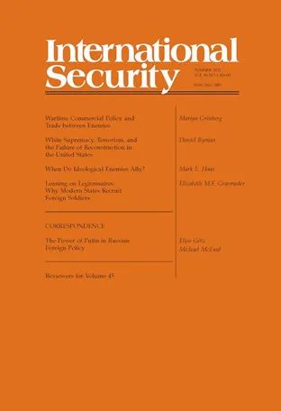

收录于合集 #新刊速递 123个

期刊简介

《国际安全》（ International Security ）是国际关系和国际安全研究领域的顶级期刊，成立于1976年，由哈佛大学贝尔弗科学与国际事务中心（Belfer Center for Science and International Affairs）资助，麻省理工学院出版社出版。据期刊引证报告（Journal Citation Reports）统计，其影响因子（impact factor）一直高居国际关系领域前五。2019年，该刊在国际关系领域排名第一。
本期编委
编译： 尤力 石稚瑄
审校： 尤力 石稚瑄
排版： 何婕
美编： 臧泽华
本期目录
1. 战时商业政策和敌对国贸易
Wartime Commercial Policy and Trade between Enemies
2. 白人至上、恐怖主义和美国重建的失败
White Supremacy, Terrorism, and the Failure of Reconstruction in the United States
3.意识形态敌人何时选择结盟
When Do Ideological Enemies Ally?
4.依靠军团士兵：为什么现代国家招募外国士兵
Leaning on Legionnaires: Why Modern States Recruit Foreign Soldiers
01
战时商业政策和敌对国贸易
题目： Wartime Commercial Policy and Trade between Enemies
作者： Mariya Grinberg，芝加哥大学政治学博士，研究领域包括国际安全、国际关系等。
摘要： 为什么国家在战争期间与敌对国进行贸易？各国在制定战时商业政策时会做出慎重的选择，并根据其预期的战争类型调整政策。具体而言，各国寻求平衡两个目标——最大化战争期间的持续贸易收入和最小化对手从贸易中获得军事利益的能力。因此，国家与敌对国的贸易包括（1）对手需要很长时间才能转化为军事能力的产品，以及（2）对国内经济至关重要的产品。此外，各国还根据自己在战场上的表现调整战时商业政策。通过对一战期间英国战时商业政策的分析，作者发现产品转化为军事能力的时间决定了该产品在战争期间是否以及何时被禁止贸易。此外，国内政治压力在战时商业政策决策中只起到很小的作用。
Why do states trade with their enemies during war? States make deliberate choices when setting their wartime commercial policies, and tailoring policies to match the type of war the states are expecting to fight. Specifically, states seek to balance two goals–maximizing revenue from continued trade during the war and minimizing the ability of the opponent to benefit militarily from trade. As a result, states trade with the enemy in (1) products that their opponents take a long time to convert into military capability, and (2) products that are essential to the domestic economy. Furthermore, states revise their wartime commercial policies based on how well they are doing on the battlefield. An analysis of British wartime commercial policy in World War I finds that a product’s conversion time into military capabilities determines if and when that product will be prohibited from trade during the war. Alternatively, domestic political pressures play only a marginal role in wartime commercial policy decisions.
02
白人至上、恐怖主义和美国重建的失败
题目： White Supremacy, Terrorism, and the Failure of Reconstruction in the United States
作者： Daniel Byman，美国乔治城大学沃尔什外事学院政治学教授，布鲁金斯学会高级研究员兼主任。
摘要： 美国的重建失败了，因为反对重建的南方白人有效地使用暴力破坏黑人政权，迫使未作出承诺的南方白人站在他们一边。尽管结构性因素使镇压暴力变得更加困难，但事实证明，最重要的因素是一系列政策的失败。激进的、由共和党领导的美国政府没有部署足够的军队，也没有积极使用军队。政府也没有寻求其他可能取得成功的途径，比如武装黑人社区。暴力导致重建失败，胜利的白人至上主义者将结构性种族主义嵌入重建后南方的政治和社会体系。重建的失败说明了半途而废的危险。美国试图在兵力和时间上以低成本重塑美国南方。此外，这一失败表明，重建必须确保民主化，即法治，而不仅仅是选举。最重要的是，美国的重建表明：在内战后与失败者达成妥协的共同政策建议往往充满了风险，和平的代价是好几代人的不公正。
Reconstruction failed in the United States because white Southerners who were opposed to it effectively used violence to undermine Black political power and force uncommitted white Southerners to their side. Although structural factors made it harder to suppress this violence, a series of policy failures proved most important. The Radical Republican-led U.S. government did not deploy enough troops or use them aggressively. Nor did it pursue alternative paths that might have made success more likely, such as arming the Black community. The violence caused Reconstruction to fail, and the victorious white supremacists embedded structural racism into the post-Reconstruction political and social system in the South. Reconstruction’s failure illustrates the dangers of half measures. The United States sought to reshape the American South at low cost, in terms of both troop levels and time. In addition, the failure indicates the importance of ensuring that democratization includes the rule of law, not just elections. Most important, Reconstruction demonstrates that a common policy recommendation—compromise with the losers after a civil war—is often fraught, with the price of peace being generations of injustice.
03
意识形态敌人何时选择结盟
题目： When Do Ideological Enemies Ally?
作者： Mark L. Haas，杜肯大学政治学系教授。
摘要： 为什么国际意识形态敌人——由对首选的国内制度和价值观进行深刻争论的领导人所统治的国家——有时能够克服意识形态上的分歧并结盟对抗共同威胁，而有时却不能？意识形态敌人面对一个共同的敌对者结成的联盟不同于意识形态相似的国家面对类似威胁结成的联盟。意识形态敌人的联盟成员永远被两股相互对抗的强大力量撕裂。共同的物质威胁将这些国家推到一起，而意识形态差异的影响则把他们拉开。为了预测意识形态敌人何时选择或不太可能为了追求共同利益而结盟，有必要知道在某个特定时期哪些竞争力量可能占据主导地位。除了意识形态仇恨之外，两种意识形态变量在决定结果方面发挥着关键作用：（1）国家对国内重大意识形态变化的敏感性，（2）国家间意识形态差异的性质。随着这些额外意识形态变量价值观的改变，意识形态敌意和物质威胁的相似程度将对领导人的联盟政策产生截然不同的影响。
Why is it that international ideological enemies—states governed by leaders engaged in deep disputes about preferred domestic institutions and values—are sometimes able to overcome their ideological differences and ally to counter shared threats, and sometimes they are not? Alliances among ideological enemies confronting a common foe are unlike coalitions among ideologically similar states facing comparable threats. Members of these alliances are perpetually torn by two sets of powerful contending forces. Shared material threats push these states together, while the effects of ideological differences pull them apart. To predict when ideological enemies are and are not likely to ally in the pursuit of common interests, it is necessary to know which of these contending forces is likely to dominate at a particular time. The values of two ideological variables beyond that of ideological enmity play the key role in determining outcomes: (1) states’ susceptibility to major domestic ideological changes and (2) the nature of the ideological differences among countries. Similar levels of ideological enmity and material threats will have vastly different effects on leaders’ alliance policies as the values of these additional ideological variables alter.
04
依靠军团士兵：为什么现代国家招募外国士兵
题目： Leaning on Legionnaires: Why Modern States Recruit Foreign Soldiers
作者： Elizabeth M.F. Grasmeder，乔治·华盛顿大学政治学博士，外交政策分析师。
摘要： 为什么现代国家要招募军团士兵——既非其军队所属国家的公民也非其臣民的外国人？在过去的两个世纪里，各国并非只招募本国公民当兵，而是动员军团帮助发动进攻，向国外投射权力，镇压异见。供需的争论解释了为什么各国会招募这些军队，它将动员军团的选择归为政治因素的作用，这些政治因素限制了政府在国内招募的回旋余地，以及政府对其面临的外部领土威胁的看法。一种多元方法路径对这些说法进行了评估，首先通过检查1815年至2020年军团招募的原始数据集，然后在二战参与者中采用一致性测试，最后对纳粹德国论据的一个棘手测试案例进行详细审查。国家征募军团的盛行要求重新评估关于现代军队发展的现有叙事，并为国家如何在身份、规范和安全等相互竞争的必要性之间取得平衡提供了新的见解。军团招募也强调有必要重新调整现有的计算净评估和为战略突袭做准备的方法。这些理论和证据表明政府如何利用军团来加强其军事力量，并推动他们所部署的士兵的质量和数量的快速变化，而非受制于一个国家的公民或边界。
Why do modern states recruit legionnaires—foreigners who are neither citizens nor subjects of the country whose military they serve? Rather than exclusively enlist citizens for soldiers, for the past two centuries states have mobilized legionnaires to help wage offensives, project power abroad, and suppress dissent. A supply-and-demand argument explains why states recruit these troops, framing the choice to mobilize legionnaires as a function of political factors that constrain the government’s leeway to recruit domestically and its perceptions about the territorial threats it faces externally. A multimethod approach evaluates these claims, first by examining an original dataset of legionnaire recruitment from 1815 to 2020, then by employing congruence tests across World War II participants, and finally by conducting a detailed review of a hard test case for the argument—Nazi Germany. The prevalence of states’ recruitment of legionnaires calls for a reevaluation of existing narratives about the development of modern militaries and provides new insights into how states balance among the competing imperatives of identity, norms, and security. Legionnaire recruitment also underscores the need to recalibrate existing methods of calculating net assessments and preparing for strategic surprise. Far from being bound to a state’s citizenry or borders, the theory and evidence show how governments use legionnaires to buttress their military power and to engineer rapid changes in the quality and quantity of the soldiers that they field.